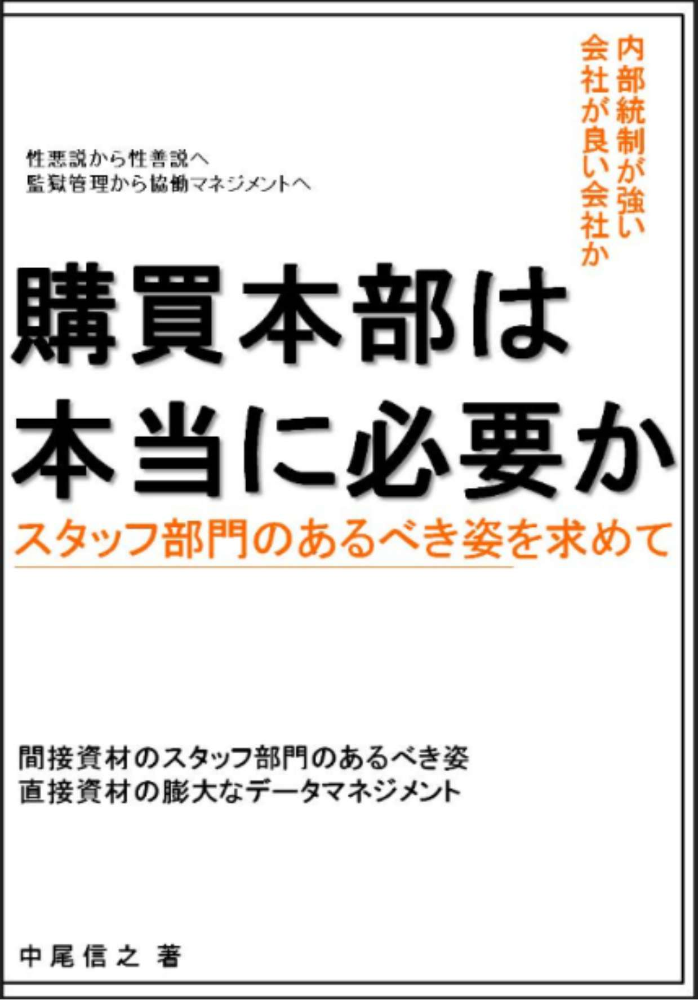
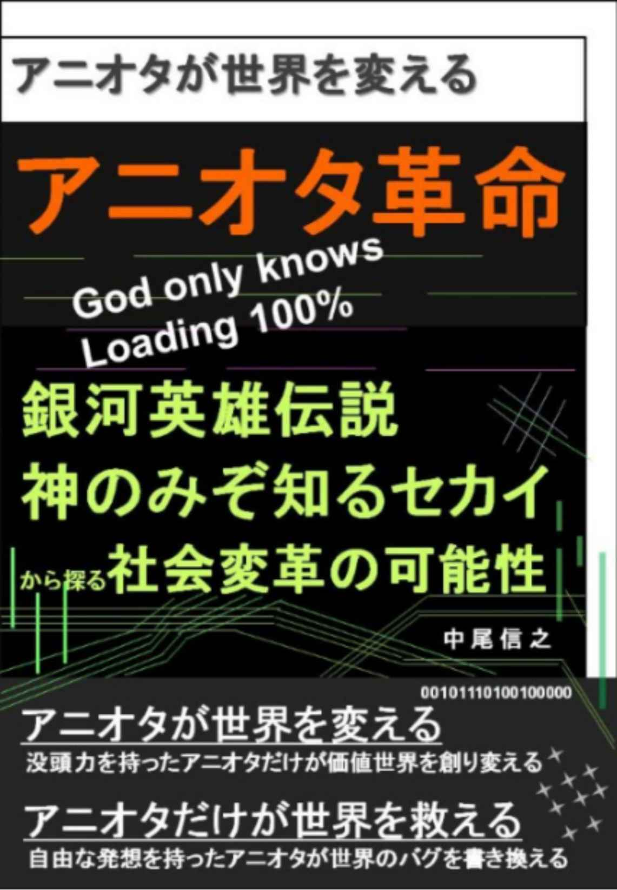
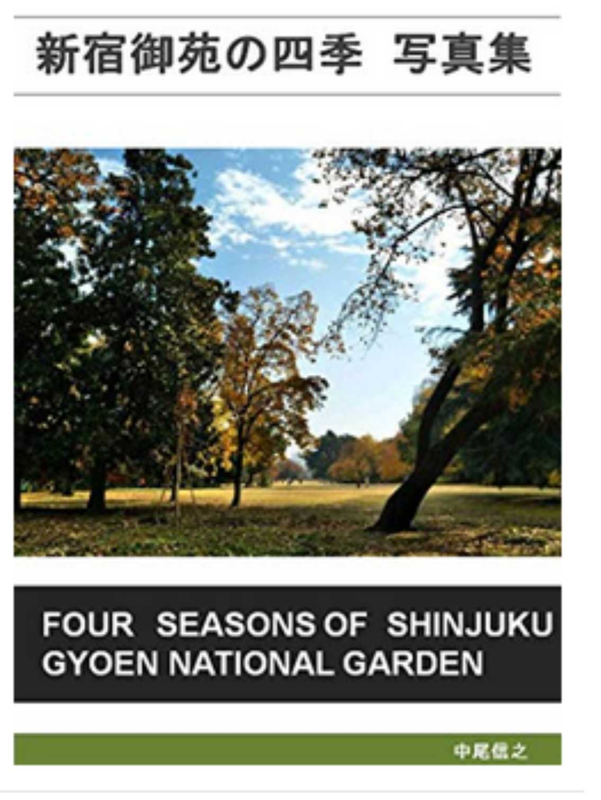

| 「普通」の絵本作家や会社員に「絶対」なるな | |
| 中尾信之 | |
| (2018) | |
「普通」の絵本作家や会社員に「絶対」なるな
□はじめに
・普通の絵本作家になるな。普通の会社員になるな
・増えないデザインの仕事
□第一章 普通種のリスク
・普通種は絶滅危惧種
・ライフワークとファイナンス活動
□第二章 普通種の損をする構造
・普通種の芸術家が生活費を稼げない構造
・普通種の会社員が豊かになれない構造
□第三章 普通から脱出せよ
・いつでもトップの目線で考えて発言する 普通の市民になるな
・掛け算の生き方
□おわりに
・認識世界を変えることから始まる、新しい世界
「普通」の会社員や絵本作家に絶対なるな
□はじめに
・普通の絵本作家になるな。普通の会社員になるな
「絵本作家になるな」
これは私が、半分本気で、半分冗談で「絵本作家」である弟に言った言葉である。彼は、もう何年も前に「絵本作家」になってしまっているので、今更、「なるな」、というのは少し違うかもしれない。むしろ「普通の絵本作家をやめろ」が正しいに違いない。
しかし、世の中の若者が、これ以上、「普通の絵本作家」になることに幻想を抱かないようにすることは、大きな意味があることだと思っている。絵本業界は、非常に特殊な業界である。本屋さんの絵本コーナーの限られたスペースに、昔からの名作が並んでいて、それらが、ほとんどの棚を占有している。実際、誰もが記憶にある、「ぐりとぐら」や「おおきなかぶ」、「ふたりはともだち」など、限られた作品が何十年も読まれ続けている。次々に新しい作品が生まれて、棚に並んで消費されていく雑誌、漫画や、アニメの世界とは少し異なった業界である。
機能脳科学者である苫米地英人さんの定義によれば、仕事とは個々人が社会に対して、なんらかの機能を提供するものである。弟の言葉をかりれば絵本作家という仕事は、子供たちを笑顔にするためにある。絵本だけではなく、漫画も、小説も、読んでくれる人に届くということから始まる。あらゆる芸術は人に届くことが重要である。誰かに届く、誰かの役に立つ機能を提供するというのは、芸術に限らず、その他のあらゆる仕事でも同じである。
どんなに素晴らしい本を作っても、それが子供たちに的確に届く商流の仕掛けがなければ、絵本作家としての機能が果たせているとは言いがたい。このことも、絵本を書くという仕事に限らず、あらゆる仕事でも同じである。
たとえば、私が今なんらかの能力を持って、二つの組織のどちらに入るか選択しようとしていたとする。Ａという組織と協力すれば、１００の結果を出せるリソースやインフラが得られるとする。Ｂという組織と協力すれば、Ａの１０倍である１０００の結果が出せるリソースやインフラが得られるとする。その場合、当然、１０倍の結果が出せる、別の言い方をすれば、１０倍、社会への機能提供ができるＢを選ぶのが、自分のためにも、社会のためにも良いことであると考えるのが論理的判断である。
仮にＡを選び、１０分の１の量しか結果がだせない場合でも、質が１０倍であれば、Ａを選んでも、Ｂを選んでも、それは同じだといえるのかもしれない。このように、同じ人間でも、その実力や潜在力を最大限に発揮させる、インフラや装備としての使える武器がどれだけ整った環境に身を置くかが重要になるということである。
特別困難な任務にあたる軍隊の特殊部隊も、一般のビジネスマンも、創造的な作品を作り上げる芸術家も、最新の技術や、仕組みを使える環境にあるかどうかで、引き出される力が変わってくるということである。この世界では、映画のランボーのように、何も最新装備がなく身一つで強いというのは、ほとんど、ありえないし、意味のないことなのである。
いずれにしても、職業を選ぶ判断には、ある程度の論理的な思考によって、どのようなアウトプットを生むかということを判断することが大切である。なぜなら、それが自分の生活費を賄うための収入に直結することであることが普通であるし、仮にそれが収入に直結しなくても、自分の関わったことが、どれだけ人々に影響を与えるかということに繋がっていることで、自分の満足に繋がるからである。
「日本出版販売株式会社のサイト」に公開されているデータによれば、２００１年に２兆３０００億円を超えていた出版物の推定販売額は、２０１６年には１兆５０００億円強に激減している。出版物の中にはあらゆるものが含まれているので一概には言えないが、紙の出版物の業界の構造自体に問題があることが分かる。その構造の中で、 今までの普通のやり方をしていれば、同じインプットに対して、アウトプットは６５％になるということである。 あえて、そのような業界に入るのであれば、そこで今までと違うアプローチをすることが必須であることが分かる。この数字だけ見ても、そのような考え方ができる。それ以上、多くのデータを集めなくても、だいたいこの考えは正しいと推定ができる。
・増えないデザインの仕事
２００６年に、ダニエル・ピンクという学者が、 「 A whole new min d 」という本を出している。日本語版は大前研一さんが翻訳している。ここでは「我々は高度にデザインを重視する社会に入ってくるから、どういうものでもデザインが大切ですよ。そういう文化になってきますよ。また、そういう能力を磨くことが良いと思いますよ」ということを言っているのである。
なるほど、同じものを買うのであれば、デザインが優れたものがいいに決まっている。しかし、デザインが優れたものは、製造工程から考えても、製造量から考えても、またデザインにかかるコストや、これを宣伝するためのマーケティングのコストから考えても、販売価格が高くなるので、かならずしも、デザインが優れたものが、すぐに隆盛を誇るわけでもない。
また、デザインが重要視される社会になるとして、それでは「本質的に、すぐれたデザインとは何か」という根本的な問題はある。人の美意識とは、その時代時代で異なるものである。日本人が、古めかしいと思うような日本の昔ながらのものを、海外では美しいと感じることもあるのである。たとえば、ランドセルも、そのような代表かもしれない。日本では制服と同じように、人の選択権を拘束している象徴であるランドセルが、海外では利用している人が少ないため、逆に、珍しく美しく思えるのである。本質的な美しさだけではなく、デザインには希少性ということが、大切なことが分かる。
「すぐれたデザインとは何であるか」、そういう本質的な議論は置くとして、時代の方向性としては、デザインや抽象的なものに価値が置かれる、そういう文化になっていくのだろうという推測は成り立つのだろう。このダニエル・ピンクの本を読んだ当時の私は、そう感じていた。ところが、あの本が出てから、この１２年の間に、芸術の仕事は増えたのだろうか。皆様はどうお考えになるだろうか。実際は、芸術の仕事は、ほとんど増えていないと私は思う。デザインのような仕事は、優れた才能に注文が集中するので、頭数をそれほど増やす必要はないのだと思われる。また、ここでも技術の進歩で、効率的なデザイン創出ができているはずである。
物質文化が成熟したのちには、心の時代がやってくると言われてから随分と時間がたち、今後、単純労働をロボットやＡＩがやってくれるようになれば、人は単純な労働から解放され、より芸術や、創造性の高いことに専念できると言われている。ところが、紙の本だけを見れば、本の売り上げは減少し、音楽のＣＤ販売数も減っている。この状態が続けば、アナログ製品の希少性が高まり、逆にアンティーク品としての価値が上がる時代がやってくるとも言われる。しかし、それは、全体の需要が増えることを意味せず、需要が減って製造がストップするからこそ、需要が減っても、希少になり価値があがるということである。
それでも、本は電子書籍になり、音楽は、それより早くダウンロード文化が根付いている。だからアナログの情報は増えてはいなくても、デジタルの情報の増大により、総量は増加しているのかもしれない。仮に総量が同じだとしても、生産され、消費されるスタイル、環境が変わっているのであるから、作り手、もしくは作品を届ける仕事をしている人は、この変化を正しく認識しなければならない。だから絵本作家は、いままでどおり紙の本のことだけを考えていてはいけないし、音楽家もＣＤのことだけを考えていてはいけないということになる。大切なのは、時代の変化にあわせて、やり方を変えられる人間になるということである。
だから、「絵本作家になるな」「会社員になるな」という
メッセージには、「普通の」という前置きが入る。
縮小する紙の本が減る状態で、絵本だけが大きく伸びることはない。その環境の中で、今まで通りの普通のやり方を考えて、普通のやり方だけをしているビジネスパートナーと組むだけでは、絵本作家が夢見る「子供たちを笑顔にする」ということに、つながりにくいのである。逆に、時代の変化にあわせた仕組みを構築したり、利用したりすることができるビジネスパートナーと組むことができれば、時流に乗ることができる可能性が広がるということである。
この大きな問題に思い至った時、私は、このことに、一度まっすぐ向き合うべきであると思うようになった。絵本業界の情報を知り、考えていると、これは一冊まとめないと、すっきり眠れないと思うほど、考えるようになったのである。これが、私がこの本を書くことにしたきっかけである。
「普通の絵本作家になるな」
これは半分以上、本気の弟への助言である。そして、これは、抽象度をひとつ上げて考えるならば、芸術家にだけの言葉ではないと言える。
「普通の会社員になるな」
普通の会社員になれば、自主性を発揮できず、いいように使われて、言いなりになるだけである。そのような集団としての日本の状態に対する処方箋としては、「日本国独立宣言 日本人解放宣言」という本をしたためた。個々人としての生き方だけではなく、集合的意識、集合的無意識としても、日本人は、少しでも多くの人間が、とらわれた認識世界から目覚める必要があると思うからである。
「普通の〇〇」になるな。
これは、今の時代、そしてこれからの時代を生きていくために、私自身も含めた誰もが一考してみる価値があるテーマなのではないだろうか。 面白いことに、「普通の会社員」を辞めて、芸術家になっても、「普通の芸術家」になっては、リスクは減らないのである。そのジャンルの中で、普通ではない存在になる必要がある。
「普通」が得をしていた時代は静かに終わりを告げたか、今まさに終わろうとしている 。そうなると、誰もが普通でいることは、集団としても、個人としてもリスクの高い生き方なのではないだろうか。私は、有名な起業家でもないし、有名な作家でもない。しかし、幼い頃から「自分は普通ではないんだろうな」と思って生きてきた人間である。良くも悪くも、友人や周りの人からも、そのように言われて生きてきた。
つい最近までは、得をしていると思うことは多くはなかったが、最近、普通ではないことによって恩恵を受けていると感じることが多くなってきたのである。まさに、時代は、「普通」が得をしていた時代から、「普通ではない人種」が得をし始める転換点にあるのかもしれない。
この本を手にして頂いたということは、あなたは既に単純なる「普通種」ではないはずである。すでに、あなたはイノベーター、もしくはニュータイプとして覚醒を始めているかもしれないし、覚醒する一歩手前の状態にあるのかもしれない。少なくとも、私たちは、「純粋普通種」とは、意を異にし、志を同じくしている同士であると信じるものである。過去、普通だった種を超えて、新しい道を探していこうではありませんか。
日本出版販売株式会社のサイト
https://www.nippan.co.jp/recruit/publishing_industry/current_status.html
□第一章 普通種のリスク
・普通種は絶滅危惧種
今回の書籍タイトルの下に、私は、 「普通種は絶滅危惧種」 であると記載した。一般的に、広範囲なエリアに広く分布した種も、いずれは環境の変化で、急激に衰退することはありえることである。すぐに、思いつくのは白亜紀後期に絶滅されたとされる恐竜である。また、たとえばトキのように、現在、日本では野生種は絶滅されたとされるような種でも、１８世紀には、ロシアや中国、東南アジア、日本で広く見られた鳥であったというのである。このようなことからも分かるように、かつて広く繁栄していたからということは、今後も繁栄を謳歌できる種類であるということを、まったく担保しないということである。
このような事実からも分かるように、同じ特性しか持っていない集団は、あるひとつの条件変化によって、一斉にダメージを受けてしまうことが知られている。この例として、民主党政権時に農林水産大臣をされた山田正彦さんの著作、「タネはどうな る : 種子法廃止と種苗法適用で」にも取り上げられていたのがジャガイモに関する歴史的事実である。
アイルランドのジャガイモは全て同じクローンであったために、特定の疫病に耐性がなく、１８４５年からの４年間、一気に影響を受けたというのである。飢餓による多くの方が亡くなったのは、それだけが原因ではなく、食料が大幅に不足しているにも関わらず、イギリス在住のアイルランド貴族は自分たちのことだけを考えて、アイルランドから食料が輸出したり、イギリスからは援助がなかったりという人災の面も現在は指摘されている。しかし、ここから学ぶことは、人災の愚かさだけではなく、種としての耐性である。
このアイルランドのジャガイモの危機からも、普通種として、多様な特性に欠ける種には、一定のリスクが内在していると言えるのである。だからこそ、逆説的ではあるが、「うつ病という状態」が、普通種の全体的な統一行動から離れているために、伝染病の広がりを抑えたり、なんらかのリスクヘッジになっているのではないかという科学的な研究もあるとのことである。このことは、「世界は「 ゆらぎ」でできている 」という吉田たかよしさんの著作で公開されている内容である。
日本では良く、「赤信号みんなで渡れば怖くない」というが、みんなと同じ行動をしていたのでは、大多数の人と同じく、みんなで貧しくなりましょうと言っているのと同じことなのである。みんなで、正しく公平に貧しく清く生きるのであれば、それも社会の在り方としては美しい形かもしれない。しかし、社会体制の中で、普通の人たちを搾取してきた明治維新を推進した人たちを中心にした政治家や官僚や、それにまつわる業界の人たちは、自分たちの利権は今までも放さなかったし、これからもギリギリまで放さないと思われる。民主主義国家と言われながら、一般会計予算よりも大きい特別会計の予算は、国会の審議を必要とされず、どのように使われているか詳細は開示されない。
彼らは、いつも財政運営や事業運営に失敗したら、責任を明らかにせず増税をするだけである。破綻した事業は、民営化しても、それまでの負債の負担は結局、市民に押し付けられるのである。結局、何も解決はしていない。国と地方の一般会計、そして特別会計を合計し重複をのぞいた額は３００兆円であると言われる。それだけのお金が適切に使われれば、老朽化した水道管も、止めるべき旧型の原子力発電所の処理も、待機児童の問題も本来は、一気に片づけられる額なのである。
都会の市民から巻き上げた税金を、地方で無駄に消費して国債を乱発し、積み上げておいて、これまでの社会の問題は解決しないことにだけ投資してきたのであるから、財政問題という問題を増やしただけなのである。彼らは、「国や国家財政が大変だから、みんなで苦労しましょう、負担しましょう」と言っているのは、戦中に「欲しがりません、勝つまでは」と大衆に押し付けていたのと同じ響きに聞こえる。そうして、戦争中も、戦争経済をギャンブルとして利用し、資産を増やしてきた天皇家や、その他、一部の搾取層は、市民に戦争の苦労を押し付けたり、命を落とさせたり、我慢をしいたりさせながら、自分たちは公平につつましく生きる気はないのである。「普通種」でいつづけるということは、そのような人たちのいいように、これからも富を吸い上げられるということなのである。
・ライフワークとファイナンス活動
私は２０１８年３月から電子書籍を書き始めて８月現在、３１冊を公開した。そのうち２冊は英語バージョンであるので、厳密には２９種類である。その中では、例えば、私と同郷の粘菌学者である南方熊楠を例にとり、また、機能脳科学者である苫米地英人さんや、起業家の堀江貴文さん書籍の内容を例にとりながら、自らが没頭できることに専念する生き方の重要性を説いてきた。その考え自体は今もって変わることはない。自らもそのようにありたいと思い、自分のやりたいことに専念し、文章を書くことを続けているし、２０１７年は２か月、２０１８年は半年、合計８カ月の間、組織に所属せずに２歳の長男と、生まれたばかりの二人目の育児に専念した。
しかし、ここで改めて心得ておきたいところは、個々人としては、自己責任の範囲で、自由に対する自分のリスクを取る必要があるということである。 私の場合は、極端に消費をしない人間であり、そして３０代にある程度の蓄財をしたことで、キャッシュのインフローと、アウトフローを柔軟にコントロールできる体制を構築して自由意志で判断することと、組織に縛られすぎないことを実践しているのである。
「ライフワーク」として没頭するものを持つ一方で、この言葉の響きはあまり好きではないが「ライスワーク」として、生活費をどのように、ねん出するかも考えることは避けられないことである。しかし、現在社会においては、自分のこだわりを捨てれば、堀江貴文さんの言うように、住む場所や食事に関して友人に頼ることであったり、クラウドファンディングで支援してもらうことであったり、実家に帰るであったり、生きていく方法は、法律に反しない限りひと昔前より、自由度は上がっているはずである。しかし、独立した世帯として、一定の生活水準を求めるのであれば、自分で生活の糧をどうにかしていく必要がある。芸術家であれ、格闘家であれ、会社員であれ、どのようなことに専念していても生活の糧は必要となる。
苫米地さんも、「ワイフワーク」のことを「仕事（ワーク）」と呼ぶべきだと言い、生活を支える費用を捻出することを「ファイナンス活動」と呼ぶべきであると定義している。もしくは仕事のことを「社会に対する機能の提供」と定義しており、そこから生活費がねん出されているかどうかとは区別している。いずれにしても、私たちは、ライフワーク（社会に対する機能の提供）とファイナンス活動（生活費のねん出）の両方を、ひとつで行うか、別々に行うかを自分の判断で状況に応じて行っていく必要があるということである。
一般的に、多くの人がとらわれているのは、ファンナンス活動の部分が、人生の１００パーセントに近いものであると教育を受け、そのような生き方しか選択できていないことである。そういう人にとっては、「ファイナンス活動」以外の部分にも、時間を費やすことが、人生の豊かさを増やすためのススメとなる。これは普通の会社員の方々があてはまるのだと思われる。
逆に、ファンナンス活動を軽視しすぎている芸術家の方々については、どのように、芸術をお金につなげていくかということと、お金にならない状態の芸術をしつつ、並行してファイナンス活動をしていくか、そして、その両方の時間の配分をどのようにしてとっていくかということが重要になるのである。以下に、４つのバランスの例を記した。
組織に所属する会社員そのものを、悪いという前提で本書を書こうとしていないので、ここで、ひとつコトワリを入れさせて頂きたい。本書では、「普通の会社員」は今後、損をしていく可能性が高いので、そのようなリスクを避けるため、「普通ではない、変わった独特の会社員」になろうという考え方で書いているものである。また、ポートフォリオを組むように、仕事以外にも打ち込めるものを探すべきであるということを言いたいのである。そのため、会社員全般を否定するものではないということを理解して、読み進めて頂けると幸いである。
以下の４つのバランスの例は、芸術活動というものを最優先に考えたい人という前提で、時間と収入のバランスを表した例である。
① 好きなこと（芸術活動）＝ファイナンス活動の場合
時間：芸術活動に使える時間が活動時間の１０割
収入：芸術活動で生み出される収益が生活費の１０割
これは、完全なプロの芸術家のケースで、文句のつけようがない理想的な状態であるといえる。芸術の生みの苦しみがあるかもしれないが、それも個人が選んだ道。その苦しみも生活の一部として楽しんでいけるに違いない。
② ファイナンス活動５割、芸術活動５割の時間配分の場合
時間：芸術活動に使える時間が活動時間の５割、残りがファイナンス活動
収入：芸術活動で生み出される収益が生活費の１割以下
芸術活動が収入を支えきれないが、自分がやりたいことを追求するために、５割もの活動時間を芸術活動に使えているということで、面白いバランスの仕方である。芸術活動で生み出される生活費が少なくとも、時間はバランスできており、仮に芸術活動で生み出される収入が少しずつ増えれば、時間、収入ともにバランスできそうである。
③ 好きなこと（芸術活動）に全ての時間を使い、収入ゼロの場合
時間：芸術活動につかえる時間が活動時間の１０割
収入：芸術活動で生み出される収入がゼロ
売れない芸術家で、かつ親族の支援に頼っているケースである。このケースでは、本人は好きなことだけをできているが、収入がゼロということで生活が破綻しているケースであると言える。この場合、この芸術家を支える家族がたいへんな思いをするとういことを理解する必要がある。はたまた、この芸術家は、自身の支出について、不必要なものは購入しないというふうに物欲を極限まで減らす必要がある。好きな芸術活動に没頭できているのであるから、余計な物欲はコントロールできるはずである。そうでないならば、芸術活動に満足できていないのではないかという可能性がある。
この状態を支えている家族の完全なる理解や我慢が成り立っているのであれば、他人は口をはさむ余地はない。しかし、家族が、その状態に納得しきれていないのであれば、芸術家は、バランスのとり方を自身の責任で考える必要がある。生活の糧を稼げていないということだけではなく、結局、多くの人の手に自分の作品が届いていないという、その点について、もっとも満足が足りないのではないだろうか。だからこそ、「普通の絵本作家（芸術家）になるな」ということである。
④ 基本的な普通の会社員のケース
時間：ファイナンス活動が時間の１０割
収入：ファイナンス活動が収入の１０割
一般的な普通の会社員のケースである。時間も収入も全てを仕事のために利用している。仕事以外の自由になる時間についても、ライフワークというほどのものはなく、なんとなく過ごしているか、テレビか携帯を見ているかという時間を過ごしている人である。
仕事以外で自由になる時間帯に、収入には、まったく寄与しなくても、充実したライフワークを持っている人は、生き方のリスクヘッジができており、普通種ではないと言える。また、仕事自体が、本人が本当にやりたい仕事で、普通の会社員ではなく、特殊な会社員として、組織に縛られない生き方ができている方は、余暇にライフワークをもっていなくても、①の生活費を稼げる芸術家と同じく、仕事＝ライフワークの方であると言える。しかし、そのような方は非常に稀なはずである。繰り返しになるが、普通種としての会社員は、今後、厳しい時代を迎えていくに違いない。
□第二章 普通種の損をする構造
・普通種の芸術家が生活費を稼げない構造
以下の内容は、私が、「あなたの世界を変える読書４ あなたの世界を変える１０冊の名著」で、「佐渡島 庸平」さんの「ぼくらの仮説が世界をつくる」という本の紹介で記した内容を微修正したものである。佐渡島さんは、宇宙兄弟を世に送り出した、卓越したプロデューサーである。
佐渡島さんは、作品の質を高めることだけではなく、売れる仕組みや売り方について今までとは異なったアプローチをとっている。「普通」の編集者と違い、特別な市場へのアプローチ方法を考えられるということが、卓越したプロデューサーということである。そもそも、佐渡島さんの本のタイトルが「ぼくらの仮説が世界をつくる」となっている。
優秀な人は、物事を世間がとらえている状態で、人と同じようにとらえるのではない。自分で、物事の状態を、解釈しなおして、自分なりの定義を与えているのである。だから、一般的な編集者ではできないことができているのである。本当に良いものを世に送り出し、人々に良いものを広め、ビジネスとして成り立たせる。そして、芸術家にも、有能な方には、才能と研鑽に応じた、リターンをお返しするということを目指し、そのような仕組みを成り立たせるということである。
しかし、普通種の編集者に捕まった芸術家の場合は、そうはいかない。次に、私が行った大まかな芸術家の収入の試算を簡単に紹介してみたい。
宇宙兄弟は現在のところ、累計２０００万部の販売実績があるという、仮に１冊５４０円で計算すると、書籍だけの売上は１０８億円になる。そのうち、作家の取り分が１０％であると、１．０８億円になる。
さて、ここで比較のために、想像で別の作家さんの書籍の売上試算をしてみたい。仮に１０万部の販売実績が奇跡的に上がったとして、同じく５４０円単価だった場合に、売り上げは５４００万円である。ここに同じ比率の取り分１０％を想定すると、５４０万円になる。これは１年間の数字ではなく数年として考えた場合、宇宙兄弟の原作者の方は、十分に生活ができるが、数年で５４０万円の場合、一般の世帯年収の１年分強程度を、数年で稼いだことになる。しかも、仮にヒットと言える１０万部も売れたという仮定をしても、このレベルなのである。
だからこそ、それ以上に大きなヒットを創出できる、佐渡島さんのような優れたプロデューサーの存在意義があるのである。もちろん、作品が素晴らしいという前提である。
また、ここで面白い比較として、紹介したいのが、「新風舎」という詐欺まがいの出版会社が２００８年に破綻して問題になった事実である。自費出版を歌い文句にして、新風舎自身はリスクを負わず、出版の費用を作家に全て押し付けて、販売努力は、まったくせず適当に製本してお茶を濁す。このようなやり方で、新風舎は、出版書籍数が一位であることを強みとして喧伝していたのである。これでは出版社ではなく、自費出版社と呼ぶべきビジネスモデルであろう。
この内容は、私が推測で適当に書いているのではなく、若いころの私も詩集の出版を持ち掛けられたため話を聞きにいったことがあり、ここに記載していることは、その時の実体験を含んでいる。普通に考えれば、振り込め詐欺のような話であるので、ある程度のビジネス経験のある人なら、新風舎が提示している費用負担はおかしいと分かるし、販売戦略がないことも分かる。しかし、若くて夢追いだけをしている人や、お年を召されて、とりあえず本を出したい人などは、だまされてしまうのだろう。
新風舎のやっていることを、正確に理解して納得した上でも、自費出版をしたいという方にとっては、単なる自己責任の費用負担をしただけということで問題はないが、彼らの出版の仕方について、事実誤認をしていない人は少なく、ほとんどの方が誤解をして費用を支払ったものと思われる。
スーパープロデューサーである佐渡島さんの本を読んでから、私が、気がついたのは、新風舎は明らかな詐欺に近いことを（著作者に伝える書籍の配布店舗数などに詐術を用いていたと言われるので、刑法２４６条の詐欺罪の構成要件に該当する。また仮に詐術を用いていなくても、契約のリスクを正確に伝えずに、一方的に不利益を押し付けるのは民法の基本原則である信義則に反している）していたが、そこまで酷くない場合でも、佐渡島さんのように、本当の編集者、本当のプロデューサーとしての販売の仕組みの創造や、新しい売り方の創造をしていない人たちは、新風舎と似ている部分が多かれ少なかれあるのではないかという点である。
たとえば、作家の時間を何カ月もの間、ミーティングで何度も浪費させることで、必要以上に作品に口をはさみ、作品の内容を変えさえておいて、販売努力を、まったくせず、ほとんど作品が市場で売れなかったとする。そうすると、まったく売り上げに貢献しなかった、効果につながらないミーティングを省いて、作品を変えずに、さっと販売していた方が、販売結果が同じく、ほとんど売れなくてもインプットした時間やコストが少なく効率が良いはずである。編集者だけではなく、営業が口を挟む場合、その営業は口をはさんだ責任を、販売努力をすることや、販売スキームを考えることで果たすべきではないだろうか。
そのようなことが、佐渡島さんの考えるプロデューサーとしての編集者の役割である。このあたりまえの役割が、出版業界における「普通種の編集者」や、「普通種の営業担当者」の仕事の役割には入っていないのである。普通種の営業担当者の仕事は、販売を促進するわけでもなく、形ばかりの挨拶回りのような作業をしているだけだったりするのである。
このような普通種は必要だろうか。ここにあげた例が笑えないのは、必要以上のミーティングをして不毛な議論が沢山行われるのは、絵本業界に限らず、あらゆる会社組織にも当てはまるということだからである。会議の前に事実が整理されていれば、議論する内容は非常に限定されるはずである。逆に事実の整理がなっていないから、「事実が、ああでもない、こうでもない」と認識が食い違ってしまうのである。普通種の会社組織のミーティングも絶滅すべき事象であると言える。
前述の本を販売促進していない営業組織を持った出版社の例を考えると、作家が普通の生活をできる売り上げをあげる数値を目標とせず、出版社の仕事を作り、そのコストを多くの著者の少しずつの売上を集めて、まかなっているのが実態ではないだろうか。
仮に、計算例を適当にあげるとすると、１作家の売上×１００人の作家＝数人の編集者と営業のコスト（生活費）ということである。あくまで、仮定の数字であり、数字自体に意味はないが、多くの作家の薄い利益が、編集者と、営業の仕事や、収入を支えているということである。まるで若者が老人の年金を支えている構図と同じである。
そうなってくると作家が、どうせ出版社は口をはさむくせに、販売努力をしてくれず、大きな売り上げを期待できないと割り切れば、取り分７０％で、時間をかけずに、すぐに出版できるアマゾンキンドルで出版するという選択肢が、今の時代は魅力的な選択肢として選べるのである。冒頭に記載したように、リアルな本屋さんでは、棚は限られていて、古くからの定番品に棚が占拠されてしまっているが、ネットであれば、棚に制限は基本的になくなるのである。このことは非常に大きいことである。
しかし、逆に、佐渡島さんのような最高のプロデューサー、編集者が関わってくれるのであれば、１０％の取り分でも、売り上げ母数を大きくあげてくれるのだから、才能がある人は、そちらの選択肢を取る方が、派生商品の売上も含めて大きなリターンになると言えるのである。
・普通種の会社員が豊かになれない構造
絵本作家は、多くの方に届くようにと絵本作りに向き合っているが、出版社は、絵本の製作会議に時間はとっても、販売促進には時間も頭も使わない。つまり、付加価値を生むために仕事をしているのではなく、仕事のための仕事をしているといっても過言ではないのである。日本の製造業の生産性が高いのに比べて、日本のその他の産業の生産性が低いと言われているのは、このためであると私は思う。
冷静に考えれば、日本人は真面目だし、仕組みの点から考えても、全ての企業が古いインフラ上で動いているわけではない。そうであるにも関わらず、製造業以外の生産性が、長年低いと言われていることは、違和感が強かった。その指標や指摘が正しいのであれば、単純に組織が無駄をしいていること、 「付加価値を生まない構造を持ち、仕事のための仕事」を増やしている官僚型組織になっているせいであると思われる。
これは、非常に構造的な問題である。例えば、公務員が市民のために存在しているのではなく、公務員のために存在しているケースも少なからず存在していることと同じである。このようなことは階層性を採用すると簡単に発生するのである。統治機構として、国と、都道府県と市町村という三層構造が存在している。この場合、国の予算を貰って、都道府県が事業をする場合は、国への申請や承認の取り付けが発生し、執行した後も、報告義務があったり、国の予算が入っていれば、財務省や会計監査員の監査対応となり、ここでも大量の事務作業が発生するのである。都道府県と、市町村の関係でも同じである。
しかし、全てのお金は、そもそも市民の支払った税金である。税金を無駄遣いしておいて、無駄遣いしていないかチェックする作業でも、コストを発生させるという訳の分からない構造が成り立ってしまうのである。どのみち、景気刺激策という麻薬は、無駄を承知で、経済規模だけをあげることを意図し、特定業界を潤すことを意図しているのであるから、その経済的効果をチェックするというのは滑稽なことでもある。 そもそもＧＤＰ編重主義は無駄や、非効率を助長することがポリシーとなるからである。
国の責任では、返すつもりのない国債を発行して、無駄な景気刺激策を最初から実行しなければ、無駄過ぎないかをチェックする監査も必要とならない。麻薬が切れれば余計に、禁断症状がでて、状況が悪化するだけである。このことは、初めて国債が発行された昭和４０年、１９７２年から一貫していることである。
社会が必要としていることが仕事に繋がっているものは、実需用に基づいた仕事であると言える。しかし、実需用とは別に、不必要なミーティングや、不必要な公務員の仕事のような、 「仕事のための仕事」は、付加価値を生まない。付加価値を生まないから、消費者の喜びにつながらず、そういう作業に従事している人間が多い社会は、生み出すものは飽和しているのに、だんだんと高コスト社会になっていってしまうのである。
そして、その反動から特に、大きな組織では、給与も含めたトータルコストについてシビアに見るようになってくる時代がとっくの昔に到来している。何十年も前から、大企業は潜在的な失業を抱えてきたのである。だから、何年かに一度の不況の際に、一部の大企業が景気を理由にして数千人から数万人の人員削減を実施するようになるのである。今その波は、やっと金融機関にやってきていると言われている。テクノロジーが進化すれば、無用な作業は、どんどん必要なくなっていくからである。
潜在的失業者を大企業が抱えていることが、社会としてのセイフティネットといえば、そういう見方も可能である。 ところが、逆にいうと自然な構造変革を遅らせることや、本質的に正常なセイフティネットを作ることを、なおざりにしてきたのではないかという指摘も成り立つ。
本来、生活保護をスムーズに支払う生存権を保証するシステムが正常に、機能していたとする。そして、生活保護で救済する場合は、仮に２０万から２５万を支払う社会的コストが必要だとする。これを生活保護ではなく、会社の潜在的失業者として抱えたままにさせるために、景気を刺激するのに必要な投下コストは、生活保護の社会的コストを上回る。
分かりやすく建設業に、公共の建設工事を多く発注して、彼らにプロの建設従事者としての費用を支払う場合、生活保護の費用より高い費用を支払う必要があり、このプロセスを回すための公務員も必要となるのである。どうだろうか。不自然な構造を何十年も抱えて多くのコストを社会が負担するより、本当のセイフティネットをスムーズな形で整える方が生産的で、健全な形なのではないだろうか。生活保護でも経済対策でも、どちらで救済しても、モラルハザードは発生するが、少ない金額でつつましやかに暮らすか、自分で手に職をつけて新しい仕事を探すか、考える環境を作るという点では、生活保護の仕組みが正しく機能する方が良いように思われる。
これから、ますます大企業は余剰な人員や余剰なコストをかけない方向に進んでいく。そうすると、大企業の潜在的失業者は、市場に放り出されて、新たな就職先を探すか、無職になるか、新天地を海外に求めるかというような選択にせまられる。雇用は今でもそうであるが、さらに、中小企業や、個人事業で吸収されているという状態になる。中間層の税額は、ますますあげられ、中間層自体がさらに減少を続け、大きくは、ごく一部の高額所得者と、その他という分類に塗り替えられる可能性があるとも言われる。
このような状態で考えられるのが、ベーシックインカムの制度である。なぜなら、テクノロジーの進化や規模の追求で合併連合が進み、大企業の生産性はどんどん上がっていくが、それとは逆に、大企業は、もはや雇用を吸収しない方向に進んでいくからである。そうすると、儲けている企業が、雇用せず、中間層の所得が生み出されないということになるのである。
このようなプロセスがまわって、結局、困るのは大企業である。 効率よく物を作る仕組みはできたけれど、豊かな中間層がいないため、消費経済がまわらないことになるのである。 これは、漫画からドラマ化され草彅剛さんが主演された「いいひと」でも指摘されている。もう２０年前の漫画である。このような当たり前のことが、御用経済学者たちには分からないのである。
こうなった際に、ベーシックインカムで、一律、決まった額を市民に支払い、これを生活費にしてもらい、経済を回すというものである。税金の所得の再配分機能が正常に機能しない今においては、この方法こそが公平で無駄がないのではないかと言われるのである。
このように、芸術家であっても、会社員であっても、「普通」の人は、これから、構造的に、なかなか厳しい時代を迎えようとしていると言えそうである。
私は、物欲が非常に少ない方であると思われる。散髪も高校生時代は時々、理髪店に通った時期もあったが、大学生の頃から、今まで（４１歳）、外で髪を切ってもらったことは４回である。しかも、そのうち１回は資格のある友人に切って貰ったので、お店に行ったのは３回ということになる。支出をコントロールできる人間は、その支出をまかなうための、労働の量もコントロールすることができる。だから、私は、この２０年の間に、働いていない期間を相当とっていても生活ができているのである。厳しい時代を迎えても、物欲をおさえ支出をコントロールできる、お金に縛られすぎない人間は、厳しい時代でも、自己を見失しなわずに生きていける可能性が高まると思われる。
ところが、「普通種」は物欲をあらゆる経路で刺激されているため、所得が減少しても、支出をコントロールすることが難しいのである。これも構造的な仕組みや制度上の問題と言える。
□第三章 普通から脱出せよ
・いつでもトップの目線で考えて発言する
普通の市民になるな
これは、私が社会人になるまえに、大前研一さんの本で読んだ言葉である。会社員一日目から社長の視点で考えるということである。それだけではなく、電車に乗った時に、目に入った広告に乗っている製品の企業の社長だったら、どうするかという思考実験をするというような訓練方法も記載されていた。私は、最初の仕事として、和歌山県の公務員を選択したので、いつも県知事であるつもりで物事を考えていた。私が採用された年は、本庁採用はひとりもおらず、地方の部局に全員が配属されたが、一年目から本庁が企画したプロジェクトチームに、新人でひとりだけ加わるなど「普通」ではなかった。
今から思うと相当稚拙ながら、知事への提案も恐らく最多数を提出し、賞も頂いた。県職員をしている最中に、大前研一さんが当時、推進していた働きながらインターネット留学をしようというビジネス・ブレイクスルーのプログラムで、南カルフォルニア大学のＭＢＡコースを受講し、県職員を辞めた後に、オーストラリアにワーキングホリデーで旅行をした後に、現地の大学院に編入をした。そして、そこでも残り３科目を残して退学し、東京の民間企業に就職したのである。どうも、私は普通の県職員をすることもなく、普通のＭＢＡ学生をすることも向いていなかったようである。
初めて入った企業では、ベンチャー企業と言いながらも、やはり民間も公務員も組織の抱える問題は似ているのだなという実感を持った。しかし、当時の私には、「トップの目線で考えよ」という教えがしみついていたので、「普通」ではない行動をして、危険人物のように思われた時期もあった。しかし、そのようなことを振り返って今も思うのは、例えば、普段の部門ミーティングに、たまたま「社長」が参加してくれたとする。そのような場面で、社長が何か質問や、言いたいことはないかと言ったとする。そのような場面では、ベンチャー企業でも手をあげる人がいないことは良くあるが、私は、そのような場面で、自分が思っていることを正直に話してきた。
そうすると意外に、社長に喜ばれたりすることがあった。意見を言うという行為に喜んでくれた部分と、お客様のことを考えた発言だったことに喜んでくれたということと、オペレーションを改善しようとしていることに喜んでくれたなど、理由はいくつかあったと思うが、まずは相手が誰であろうと、階級が離れていようと話し合うというスタンスを持っていることが喜ばれたのではないだろうか。
その後も、その会社は上場することはなく、大企業のグループの子会社としての活動を続けているが、当時、私は入った初年度であるにも関わらず、ストックオプションとして、かなりの株数を割り当てて頂いた。仮に、そこに留まっても、その権利を行使する機会はなかったのではあるが、「普通」ではなく真剣に仕事をし、かつ「普通」より当時は、暴れん坊で手のかかる人材だった私の存在を、社長は面白いやつだと認めてくれていたのである。
現在の私は、暴れん坊になる必要はなく、したたかに、しなやかに、成果重視で、人と関わって行くことが賢いと思っているが、トップの視点で考えるということと、若干、とがっていることで、全員には好かれなくても、「普通」、その他大勢と一緒として扱われるよりは、面白みのある人間でいる方が良いと考えている。
さて、別の会社では、多数の書籍などを持つ有名な経営者がいたが、彼の場合は、非常に人間のレベルが低く社員研修と言って、多くの社員を拘束する研修を定期的に実施していた。そこでは何か教育をするのではなく、過去の自慢をすることを趣味にしているという悪習があった。過労死を立て続けに出していた組織が、多忙な仕事をさせながら、研修に、まる１日少なからぬ人員を拘束し、その後の宿題でも時間を使わせるということをして、中身は自慢だけというのは、悪い冗談としか言えない社会がそこにあった。
これは、前述した付加価値を生まない「仕事のための仕事」（無駄な拘束時間）の代表例となる。このＳ氏の場合は、器が小さすぎて、彼が答えろと私に言うので、質問に答えただけで、目立ちすぎるなと言われるという意味不明のことがあった。グループで提出した宿題は、ほぼ私がひとりで回答を書いたが、これは優秀であると判定し、個人で書いた、さらにレベルを上げた回答には、これにも目立ちすぎるなとの返答をしてきた。この時、私は、その組織は、やはり「普通種」しか優遇しないと判断できたのである。よって、「普通種」を脱出し始めている、みなさまは、普通種しかいらないと思っている狭量な経営者のいる組織では、上手く普通を装うか、そんなところは、さっさと見切りをつけるという選択肢があることに気づく。
水道橋博士の番組で、苫米地英人さんは、「三菱地所」に入った際に、人事部に入りたい部署を聞かれた際、「社長になりたい」と答えたという。また、新人の前で演説をした社長の言葉を聞いて、「明日から社長ができる」と確信したというのである。
私たちは、実際に愚民政策をしているということが言われるような、日本の教育を普通に受けてきた。そして、非常に従順な民になってしまっている。しかし、 私たちこそが、この国の主権者であり、公僕である政治家や、公務員を監視する立場にあるのである。 トップの視点で考えるというのは、会社のトップに限らず、地方公共団体に限らず、国のトップということも含むのである。この国のトップとして、この国をどうしたいか、私たち一人一人が考えても良いのである。為政者にとって都合のよい「普通の市民になるな」ということである。国のことも会社のことも、自分の人生のことも自分が主役として考えてみることは良いことなのである。
・掛け算の生き方
掛け算というのは、ひとつのことに全精力を投入せず、リスクを分散させる考え方ということができる。仕事、家庭、趣味、社会との関係、友達との関係、生まれ故郷での関係など、いくつもの役割の柱を持つことで、そのうちのひとつが倒れても、他の柱で生きていくことができるようにするということである。仕事をとっても、ひとつの能力だけではなく、いくつかの能力を鍛えていくということも考えられるし、社会との関係をとっても、ひとつ以上の団体に所属するということも考えられる。
良く言われるのは、政治家は別の職業を持っておくべきであるということである。政治家しかしていない場合、選挙で落選した瞬間に、その政治家は社会に提供する機能がなくなる。しかし、会社を運営している人が議員になった場合は、議員の仕事は社会に提供するための機能であり、ファイナンス活動は会社の経営になる。政治家しかしていない人の場合は、政治家業が、ファイナンス活動となるから、政策立案より、失業しないように自己保身ばかりに走ることになってしまうからである。
掛け算には、もうひとつの意味があって、これは堀江貴文さんの本に書かれていた考え方である。ふたつのことを掛け合わせることで、希少性が高まるという考え方である。猫ひろしさんは、お笑い芸人でありながら、プロのマラソンランナーとなられた。いろいろと批判をする人がいるが、やりたいことを、可能なやり方で挑戦するということは評価されるべきことであると私も思う。
おかしいのは、外国人のサッカー選手が日本に帰化して日本代表として活躍することは、ウエルカムな日本人が、海外に帰化してマラソンランナーになることには批判的になる方もおられることである。極めて感情的に、良い悪いの判断をしているのが日本のマスコミと、それにつられている人たちなのである。しかし、ふたつのことを掛け合わすことで、希少性を高め注目を集めることは、正しい方法論であることを、猫ひろしさんも証明したと言える。
堀江さんの作品では、これは芸能界だけの話ではなく、仕事のスキルでも言えることだという指摘をされていた。たとえば、１００人にひとりのスキルを身に着けるだけでは、希少性は限られているが、もうひとつ１００人にひとりのスキルを身に着けると、１００×１００で、１万分の１の人間になれるのである。さらにもう一つ１００人にひとりのスキルを身に着けると、１００万分の１の人間になれるのである。こうなると、非常に希少性は高まって来る。私が４１歳で、働いていない期間も合計すると相当長いにも関わらず、８つめの組織に入れているのは、これに似たような結果によるものだと言えそうである。
間接材のコスト削減をしたことがある×直接材の仕入れをしたことがある×直接材の販売をしたことがある×外資系で働いたことがある（少し英語が使える）×管理部門も経験したことがある×コンサル的な職種も経験したことがある×営業も経験したことがある×計画や予算管理も経験している×チームを運営したことがある×交渉力が高い×電子書籍を書いている
掛け算は、どういうものが合わさっていくかは、自分の計画によるものもあるかもしれないし、自然に増えていくものがあるかもしれない。いずれにしても、いろいろな情報に対して自分をオープンにしていくことで、自分の幅が広がっていくのも事実である。絵本作家を含む芸術家も、作品の幅を広げていくためには、いろいろな経験をしてみることが、作品を魅力的にする糧になると言えるのではないだろうか。
□終わりに
・認識世界を変えることから始まる、新しい世界
前章で、私は、「我々は主権者である」と記載した。これは、当たり前のことなのであるが、普段の生活では、そのような感覚をまったく感じられずに生きている。普通の政治家は、いつも車で移動しているのに、普通の主権者は満員電車で通勤をしている。意図せずか、意図的かは別にして、主権者であることを気づかされないような文化ができあがっているということである。
まさに愚民政策、愚民教育のたまものである。私たちが、自分たちこそが主権者であることを肌身に感じていれば、政権交代は、もっと頻繁に起こるはずである。そうなれば、政治家は、自分たちが公僕であることを知り、市民の意志を無視できないようになるはずである。これらは、全て、私たち市民の認識によるものなのである。
主権者であると気づいている市民が多数いれば、政治は市民のものになるが、主権者ではなく、支配される愚民でも楽な方が良いと思ったり、単なる消費行為をするために、普通の会社員をしているだけの存在が多数であれば、政治は市民のものとならず、政治は単なる支配の道具となってしまう。全ては、私たちの認識から始まるものなのである。
会社はどうだろうか。会社も国家も集合体であることに違いはない。個人がいなければ、どのような組織も成立しないのである。優秀な個人がどれだけ集まるかで、組織の力は大きく異なっていくのである。組織と個々人は対等な契約をすることで結ばれているのである。このように組織と個人の関係のとらえ方ですらも、全ては私たちの認識の仕方次第である。
私は「あなたの世界を変える読書 あなたの世界を変える１０冊の名著」というシリーズを書き始め、既に何冊を公開している。認識世界を変えることが大切だといっても、無知では、認識世界を変えることができない。無知では正しい思考実験をすることはできない。
だからこそ、私たちは、普通ではない、有能なる市民になるために、自由なる個人になるために、必要な知識を吸収して、自らの認識こそが世界を創っていることを知り、世界を正しく把握しようと試みていくことが大切なのである。
今回、本書では、構造的に普通種が不利な状態になっていること、不利になっていく可能性が高いことを記した。これは暗い未来予測である。しかし、逆に言えば、普通種であることを脱出しているイノベーターや、ニュータイプになっていこうとしている私たちは、これからの時代の荒波も、上手に乗り越え、心穏やかに、自分の道を見極めて自由に生きていけるはずである。
実は、普通種のリスクというのは、他に道を選べないということが最も大きいリスクなのである。たとえば、普通の会社員をしていた人には、特別な誇るべき能力が備わっていないことが多い。そうすると、同じ業界でも、違う業界の他の会社にも、同じような社員は多く存在しているため、他の会社で必要とされないのである。このような普通種の会社員が、絵本作家になっても同じである。会社員として、普通の目の付け所しか持っていない人間が、絵本を書くにあたって面白い視点を持ち込むことは、非常に難しい。 職種を変えても、普通種から普通種への変化は、業界の規模が小さいところに移動する分、さらに厳しいものとなる。
さて、私は、「普通の絵本作家になるな」として、半分本気で、半分冗談で弟へのアドバイスを行った。本書は、その延長線上にあるものでもある。しかし、幸いなことに彼には、まだ望みがある。それは、「普通の絵本作家」より多様なことに手をだしていることである。
読み聞かイベントの企画や、販売促進の仕方について、自分で考え、絵本の歌を作り、イベントでは子供たちの声をその場で聴いて、即興で物語を作ったりと、「普通種」を超えつつあるからである。このまま続けることで、「普通ではない絵本作家」として大成するかどうかは、私には分からない。しかし、彼は、自分で企画について出版社に持ち込みをすることや、販売促進やイベント実施等の営業もしているため、「普通の出版社の営業担当者」より、営業企画力、営業力があるのではないかと思われる。そうすると、「普通種」ではない部分もあるから、他の業界に移動した場合に、「普通ではない営業」ができる可能性もある。
彼が、今後どのような認識に立ち、行動をしていくか、それは彼の自由であり、彼の責任においてなされるべきことである。親に、心配をかけさせないようにする責任が彼にはある。
同じように、あなたが、どのような認識にたち、どのような道を歩まれるか、それは、あなたが自由に選択していける、完全にあなたに委ねられた事柄である。
あなたは、あなたの人生の主役であり、あなたの認識世界の創造主である。「普通」でいるのも、「特別」になるも、あなたしだいである。
これから、どのような時代になって行くとしても、過去に縛られず、私たちは、自分の力で前向きに生きていくことができる。私は、そう信じているものである。
本書を手にして頂き、本当に、ありがとうございました。中尾信之
□参考文献
・大前研一 「知の衰退」からいかに脱出するか？
・大前研一 平成維新
・尾原和啓 モチベーション革命
・ＪＵＮＺО 人生ドラクエ化マニュアル
・高城剛 黒本１から４
・武田 邦彦 大麻ヒステリー ～思考停止になる日本人～
・ 国債は買ってはいけない！ 武田邦彦
・ダニエルピンク A whole new mind
・苫米地英人 洗脳経済 １５０年の呪縛
・苫米地英人 明治維新という名の洗脳
・苫米地英人 日本人だけが知らない戦争論
・苫米地英人 夢が勝手にかなう「気功」洗脳術
・苫米地英人 思うままに夢がかなう 超瞑想法
・苫米地英人 「１日１０分」で脳が生まれ変わる
・ノ・ジェス 宇宙一美しい奇跡の数式
・ミル 自由論
・村上和夫 生命の暗号
・堀江貴文 ９９％の会社はいらない
・堀江貴文 すべての教育は「洗脳」である
・堀江貴文 多動力
・ 安井元康 非学歴エリート
・山田正彦 タネはどうなる？ 種子法廃止と種苗法適用で
・吉田たかよし 世界は「ゆらぎ」でできている～宇宙、素粒子、人体の本質～
・レーニン 帝国主義論
□作品紹介

脳内ＯＳ ＦＯＲ ＨＵＭＡＮ ２０１９ ＶＥＲＳＩＯＮ
最新オペレーションシステムをインストールせよ！
https://www.amazon.co.jp/dp/B07N1T1TZF

自分を生きる天職（転職）のすすめ ～１００％実力を表現する面接法～
http://www.amazon.co.jp/dp/B07BD3K67Z

はじめてのチームマネジメント ワンチーム・ビルダーを目指して
https://www.amazon.co.jp/dp/ B07BJ98FTT

購買本部は本当に必要か スタッフ機能のあるべき姿を求めて
https://www.amazon.co.jp/dp/ B07BQ9BFDS

あなたの世界を変える読書 あなたの世界を変える１０冊の名著
https://www.amazon.co.jp/dp/ B07BT28HLV

あなたの世界を変える読書１１ あなたの世界を変える１０冊の名著
https://www.amazon.co.jp/dp/B07N4B2CXD

アニオタ革命 アニオタが世界を変える 銀河英雄伝説 神のみぞ知るセカイ から探る社会変革の可能性
https://www.amazon.co.jp/dp/B07CRQ3WWD

屋内植物園計画 小さなスペースで緑を楽しむ魔法
https://www.amazon.co.jp/dp/B07CWRK2CN

在庫管理の正解 在庫管理は、こんなに簡単だった
https://www.amazon.co.jp/dp/ B07GFS2YDN

新宿御苑の四季 写真集
Four seasons of Shinjuku Gyoen National Garden
https://www.amazon.co.jp/dp/ B07N83G4L5

吟遊物語集